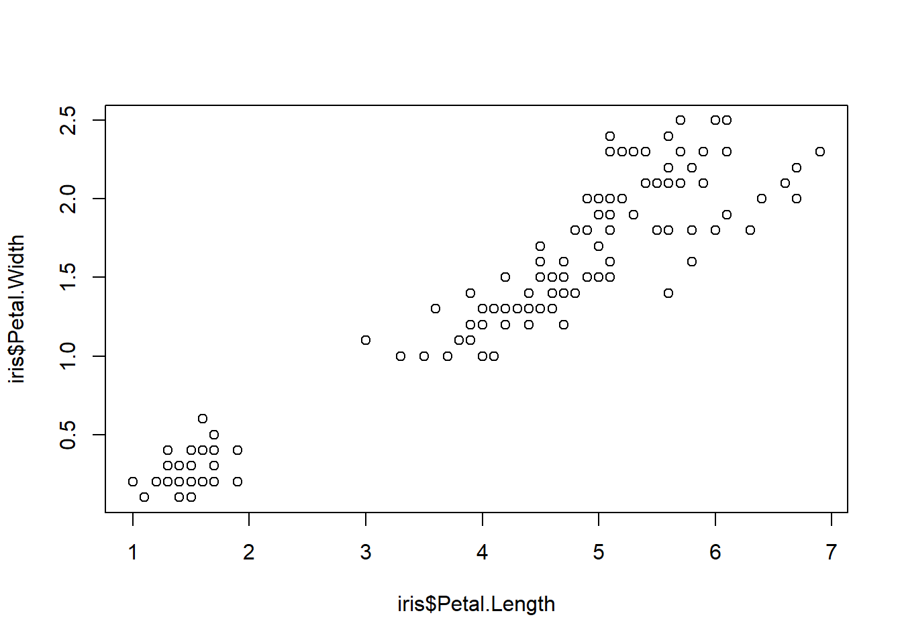
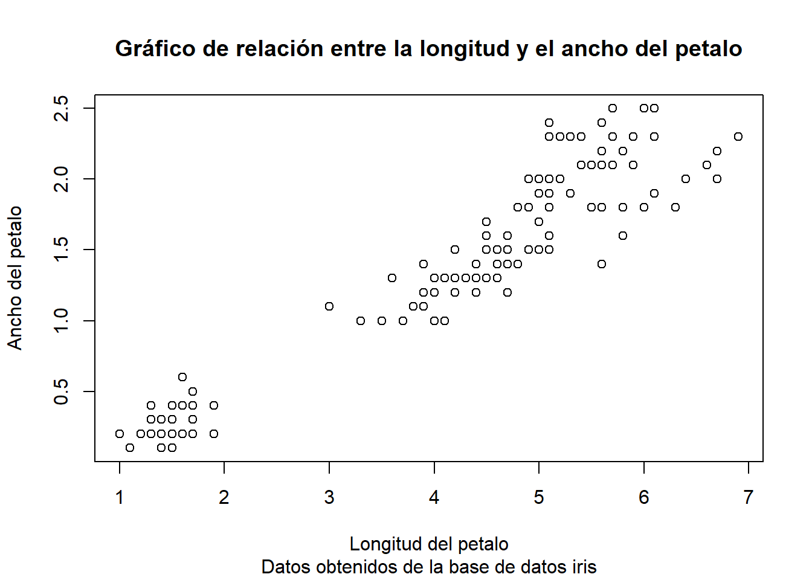
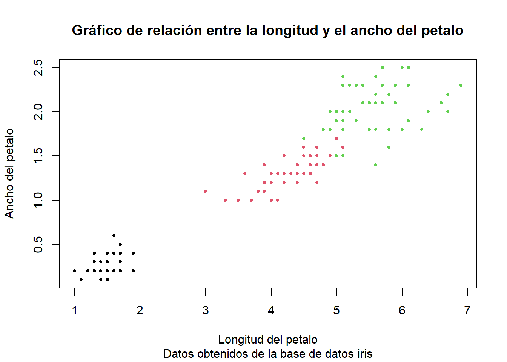

Lección 2 Estadística descriptiva
En esta lección veremos las nociones básicas de estadística descriptiva haciendo uso de R y RStudio. Veremos medidas de tendencia central como la media, mediana y moda y medidas de dispersión como varianza, desviación estándar e intervalos de confianza.
2.1 Medidas de tendencia central
Los estadísticos descriptivos sirven para describir parte de la información de nuestros datos. Las tres medidas de tendencia central más utilizadas son:
Moda: Es el valor que más se repite en un conjunto de datos. Sin embargo, casi no se utiliza en estadística y por lo mismo no hablaremos más de ella.
Media: Mide el promedio del valor de nuestros datos. Se calcula como la suma de las observaciones dividida entre el número de observaciones. Para obtener la media utilizamos la ecuación (2.1).
\[\begin{equation} \overline{x} = \frac{\sum_{i = 1}^{n}{x_i}}{n} \tag{2.1} \end{equation}\] Donde \(\sum_{i=1}^{n}{x_i}\) representa la sumatoria de los valores de todas nuestras observaciones y \(n\) es el número de observaciones.
- Mediana: Es el valor que se encuentra justo por la mitad de la distribución de nuestros datos. \[ 1, 2, 3, 4, 5 \]
En este caso, la mediana es igual al número 3 que se encuentra justo por la mitad de los datos. En caso de tener un número par de observaciones, la mediana se puede calcular como un promedio de los dos valores centrales. \[ 5, 6, 7, 8, 9, 10 \]
En este caso nuestros valores centrales son 7 y 8. Estos simplemente se promedian. \[ \tilde{x} = \frac{7 + 8}{2} = 7.5 \]
2.1.1 Media en R
El cálculo de la media en R para un conjunto de datos es relativamente sencillo. Para ello implementamos la función mean(). Podemos ver un resumen de los primeros 10 datos con la función head().
library(vegan)
data("iris")
head(iris)## Sepal.Length Sepal.Width Petal.Length Petal.Width Species
## 1 5.1 3.5 1.4 0.2 setosa
## 2 4.9 3.0 1.4 0.2 setosa
## 3 4.7 3.2 1.3 0.2 setosa
## 4 4.6 3.1 1.5 0.2 setosa
## 5 5.0 3.6 1.4 0.2 setosa
## 6 5.4 3.9 1.7 0.4 setosamean(iris$Sepal.Length)## [1] 5.843333Hemos calculado la media o el promedio para la longitud del sepalo del grupo de datos iris que viene incluida en el paquete vegan. Como en esta base de datos tenemos numerosas variables, nos referimos a una variable específica utilizando el símbolo $ seguido del nombre de la variable de interés.
Si quisiéramos podemos almacenar el promedio de la longitud y el ancho de los sépalos en una variable nueva.
Long.Prom <- mean(iris$Sepal.Length)
Long.Prom## [1] 5.843333Ancho.Prom <- mean(iris$Sepal.Width)
Ancho.Prom## [1] 3.057333Sepalos <- data.frame(Long.Prom, Ancho.Prom)
Sepalos## Long.Prom Ancho.Prom
## 1 5.843333 3.057333De esta manera obtenemos nuestra matriz con los promedios del largo y ancho de los sépalos. Si tuviéramos muestras de distintas poblaciones, podríamos generar una tabla con la media de cada población.
Es importante que especifiquemos de qué variable queremos estimar el promedio con el símbolo $, de lo contrario podemos obtener errores.
2.1.2 Mediana en R
La mediana sigue una lógica muy similar a la media. Simplemente utilizamos la función median() para obtener nuestro valor de interés.
median(iris$Sepal.Length)## [1] 5.8De nuevo, podemos hacer una matriz de datos con las medianas de nuestras observaciones.
Long.Median <- median(iris$Sepal.Length)
Long.Median## [1] 5.8Ancho.Median <- median(iris$Sepal.Width)
Ancho.Median## [1] 3Sepalos2 <- data.frame(Long.Median, Ancho.Median)
Sepalos2## Long.Median Ancho.Median
## 1 5.8 3Incluso podríamos combinar ambas matrices (promedio y mediana) en una sola.
Sepalos.Resumen <- data.frame(Sepalos, Sepalos2)
Sepalos.Resumen## Long.Prom Ancho.Prom Long.Median Ancho.Median
## 1 5.843333 3.057333 5.8 3También podríamos optar por escribir directamente las nuevas variables de la mediana sobre la matriz de datos que ya habíamos generado para las medias.
Sepalos$Long.Median <- median(iris$Sepal.Length)
Sepalos$Ancho.Median <- median(iris$Sepal.Width)
Sepalos## Long.Prom Ancho.Prom Long.Median Ancho.Median
## 1 5.843333 3.057333 5.8 3Como podemos ver, el resultado es el mismo. Al nosotros escribir Sépalos$Long.Median y asignarle una función, estamos generando una nueva variable en la matriz de datos preexistente aunque en dicha matriz no existía previamente la variable Long.Median. Ambas son técnicas distintas de llegar al mismo resultado y ambas son perfectamente válidas.
Sepalos## Long.Prom Ancho.Prom Long.Median Ancho.Median
## 1 5.843333 3.057333 5.8 3Sepalos.Resumen## Long.Prom Ancho.Prom Long.Median Ancho.Median
## 1 5.843333 3.057333 5.8 3Incluso podemos calcular la media y la mediana para los valores de los pétalos y resumir todo en una sola matriz.
Pet.Long.Mean <- mean(iris$Petal.Length)
Pet.Ancho.Mean <- mean(iris$Petal.Width)
Pet.Long.Median <- median(iris$Petal.Length)
Pet.Ancho.Median <- median(iris$Petal.Width)
Resumen.iris <- data.frame(Sepalos, Pet.Long.Mean, Pet.Ancho.Mean, Pet.Long.Median, Pet.Ancho.Median)
Resumen.iris## Long.Prom Ancho.Prom Long.Median Ancho.Median Pet.Long.Mean Pet.Ancho.Mean
## 1 5.843333 3.057333 5.8 3 3.758 1.199333
## Pet.Long.Median Pet.Ancho.Median
## 1 4.35 1.3Lo ideal sería cambiar el nombre a las primeras 4 columnas para indicar que se trata de sépalos. También podemos hacer esto.
colnames(Resumen.iris)[colnames(Resumen.iris) %in% c("Long.Prom", "Ancho.Prom", "Long.Median", "Ancho.Median")] <- c("Sep.Long.Prom", "Sep.Ancho.Prom", "Sep.Long.Median", "Sep.Ancho.Median")
Resumen.iris## Sep.Long.Prom Sep.Ancho.Prom Sep.Long.Median Sep.Ancho.Median Pet.Long.Mean
## 1 5.843333 3.057333 5.8 3 3.758
## Pet.Ancho.Mean Pet.Long.Median Pet.Ancho.Median
## 1 1.199333 4.35 1.3El operador %in% sirve para subsetear datos. En este caso, le indicamos que queremos que a las variables con nombre “Long.Prom,” “Ancho.Prom,” “Long.Median,” “Ancho.Median” les asigne un nuevo nombre, indicado con <- y la función de concatenar c.
2.1.3 La función summary
Como pudimos observar, hacer todos estos cálculos uno por uno harían que nuestro script sea demasiado largo. Debido a esto, podemos utilizar una función llamada summary() que nos da estos mismos estadísticos y otros adicionales que serán de mucha ayuda.
summary(iris)## Sepal.Length Sepal.Width Petal.Length Petal.Width
## Min. :4.300 Min. :2.000 Min. :1.000 Min. :0.100
## 1st Qu.:5.100 1st Qu.:2.800 1st Qu.:1.600 1st Qu.:0.300
## Median :5.800 Median :3.000 Median :4.350 Median :1.300
## Mean :5.843 Mean :3.057 Mean :3.758 Mean :1.199
## 3rd Qu.:6.400 3rd Qu.:3.300 3rd Qu.:5.100 3rd Qu.:1.800
## Max. :7.900 Max. :4.400 Max. :6.900 Max. :2.500
## Species
## setosa :50
## versicolor:50
## virginica :50
##
##
## Esta función además de darnos la media y la mediana, nos da los valores mínimos y máximos, además del primer y tercer cuartil (utilizados para generar gráficos de boxplot) y nos dice cuántas observaciones tenemos de cada una de las especies.
Podríamos guardar este resumen en una variable.
summ.iris <- summary(iris)
summ.iris## Sepal.Length Sepal.Width Petal.Length Petal.Width
## Min. :4.300 Min. :2.000 Min. :1.000 Min. :0.100
## 1st Qu.:5.100 1st Qu.:2.800 1st Qu.:1.600 1st Qu.:0.300
## Median :5.800 Median :3.000 Median :4.350 Median :1.300
## Mean :5.843 Mean :3.057 Mean :3.758 Mean :1.199
## 3rd Qu.:6.400 3rd Qu.:3.300 3rd Qu.:5.100 3rd Qu.:1.800
## Max. :7.900 Max. :4.400 Max. :6.900 Max. :2.500
## Species
## setosa :50
## versicolor:50
## virginica :50
##
##
## 2.1.4 Visualización básica de datos
Podemos graficar, por ejemplo, la base de datos iris.
plot(iris)
Como podemos ver, tenemos una gráfica compleja donde no se pueden apreciar del todo bien los datos. Para hacer una gráfica de, por ejemplo, la longitud de los sépalos de cada una de las especies, tenemos que agregar ciertos argumentos a la función plot().
plot(iris, x = iris$Species, y = iris$Sepal.Length)
También podemos graficar la relación entre dos variables para observar como estas van cambiando.
plot(x = iris$Petal.Length, y = iris$Petal.Width)
Por ejemplo, graficamos la relación que existe entre la longitud del petal y su ancho. A primera vista parece existir una correlación positiva entre ambos.
Podemos agregar más argumentos a nuestro gráfico para hacerlo más presentable.
plot(x = iris$Petal.Length, y = iris$Petal.Width, main = "Gráfico de relación entre la longitud y el ancho del petalo",
sub = "Datos obtenidos de la base de datos iris", xlab = "Longitud del petalo", ylab = "Ancho del petalo")
Los argumentos main y sub sirven para darle un título y un subtítulo a nuestro gráfico, respectivamente. Los argumentos xlab y ylab sirven para nombrar los ejes x y y.
Otros argumentos con los que podemos modificar la forma, color y contorno de los puntos son pch, bg y col, respectivamente. Con el argumento cex podemos modificar el tamaño de los puntos.
plot(x = iris$Petal.Length, y = iris$Petal.Width, main = "Gráfico de relación entre la longitud y el ancho del petalo",
sub = "Datos obtenidos de la base de datos iris", xlab = "Longitud del petalo", ylab = "Ancho del petalo", cex = 0.8,
col = iris$Species, pch = 20)
Es necesario que para que el relleno (argumento bg) sea visible, se necesitan pch = 21:25, en este caso utilizamos pch = 20. Al no poner ningún valor para col el contorno de los puntos es negro.
Las leyendas con los comandos R de base no son muy bonitas y son poco intuitivas. Para esto utilizaremos una librería más adelante llamada ggplot2.
2.1.5 Valores atípicos

Como podemos ver en el gráfico anterior, en el eje de las ordenadas tenemos a las tres especies: Iris setosa, I. versicolor e I. virginica. Esta es una gráfica llamada boxplot y se construye a partir de los datos que tenemos en nuestro resumen. La parte inferior de la caja corresponde al primer cuartil, la línea negra central corresponde a la mediana y la parte superior de la caja corresponde al tercer cuartil. Las líneas que salen de la caja corresponden a los valores máximos y mínimos que no son valores atípicos o outliers. Un valor atípico es aquel que se sale de la cerca superior e inferior, pero, ¿cómo se definen estos límites?
Para el calculo de estas cercas se implementan las siguientes ecuaciones (2.2).
\[\begin{equation} \begin{split} Cerca_i = Q_1 - 1.5 * IQR \\ Cerca_s = Q_3 + 1.5 * IQR \end{split} \tag{2.2} \end{equation}\]
Donde \(Cerca_i\) y \(Cerca_s\) corresponden a la cerca inferior y superior, respectivamente, y el valor de \(IQR\) corresponde al rango intercuartil (diferencia entre el primer y tercer cuartil \(IQR = Q_3 - Q_1\)). Por ejemplo, para la especies I. virginica el \(IQR\) de la longitud del sepalo es el siguiente: \[ IQR = 6.9 - 6.225 = 0.675 \]
Y las cercas correspondientes son: \[ Cerca_i = 6.225 - 1.5*0.675 = 5.2125 \\ Cerca_s = 6.9 + 1.5*0.675 = 7.9125 \]
Aunque no están incluidas en el boxplot, nuestras cercas inferior y superior son 5.2125 y 7.9125, respectivamente. Cualquier valor por encima o por debajo de este límite será considerado un valor atípico o outlier. Aunque las cercas no se incluyen en el boxplot, este sí gráfica los puntos cuando estos son considerados como valores atípicos, como en el caso del punto que podemos observar en I. virginica, que tiene un valor menor a 5.2125, específicamente, tiene un valor de 4.9. Incluso nosotros podríamos buscar este valor utilizando una serie de filtros.
iris %>% dplyr::filter(Sepal.Length <= 5.2125)## Sepal.Length Sepal.Width Petal.Length Petal.Width Species
## 1 5.1 3.5 1.4 0.2 setosa
## 2 4.9 3.0 1.4 0.2 setosa
## 3 4.7 3.2 1.3 0.2 setosa
## 4 4.6 3.1 1.5 0.2 setosa
## 5 5.0 3.6 1.4 0.2 setosa
## 6 4.6 3.4 1.4 0.3 setosa
## 7 5.0 3.4 1.5 0.2 setosa
## 8 4.4 2.9 1.4 0.2 setosa
## 9 4.9 3.1 1.5 0.1 setosa
## 10 4.8 3.4 1.6 0.2 setosa
## 11 4.8 3.0 1.4 0.1 setosa
## 12 4.3 3.0 1.1 0.1 setosa
## 13 5.1 3.5 1.4 0.3 setosa
## 14 5.1 3.8 1.5 0.3 setosa
## 15 5.1 3.7 1.5 0.4 setosa
## 16 4.6 3.6 1.0 0.2 setosa
## 17 5.1 3.3 1.7 0.5 setosa
## 18 4.8 3.4 1.9 0.2 setosa
## 19 5.0 3.0 1.6 0.2 setosa
## 20 5.0 3.4 1.6 0.4 setosa
## 21 5.2 3.5 1.5 0.2 setosa
## 22 5.2 3.4 1.4 0.2 setosa
## 23 4.7 3.2 1.6 0.2 setosa
## 24 4.8 3.1 1.6 0.2 setosa
## 25 5.2 4.1 1.5 0.1 setosa
## 26 4.9 3.1 1.5 0.2 setosa
## 27 5.0 3.2 1.2 0.2 setosa
## 28 4.9 3.6 1.4 0.1 setosa
## 29 4.4 3.0 1.3 0.2 setosa
## 30 5.1 3.4 1.5 0.2 setosa
## 31 5.0 3.5 1.3 0.3 setosa
## 32 4.5 2.3 1.3 0.3 setosa
## 33 4.4 3.2 1.3 0.2 setosa
## 34 5.0 3.5 1.6 0.6 setosa
## 35 5.1 3.8 1.9 0.4 setosa
## 36 4.8 3.0 1.4 0.3 setosa
## 37 5.1 3.8 1.6 0.2 setosa
## 38 4.6 3.2 1.4 0.2 setosa
## 39 5.0 3.3 1.4 0.2 setosa
## 40 4.9 2.4 3.3 1.0 versicolor
## 41 5.2 2.7 3.9 1.4 versicolor
## 42 5.0 2.0 3.5 1.0 versicolor
## 43 5.0 2.3 3.3 1.0 versicolor
## 44 5.1 2.5 3.0 1.1 versicolor
## 45 4.9 2.5 4.5 1.7 virginicaComo podemos ver, la mayoría de las especies con valores inferiores a 5.2125 corresponden a otras especies, sin embargo, tenemos una única observación de la especies I. virginica con estas características. Los valores atípicos nos pueden indicar errores en la medición, en nuestra instrumentación, entre otras
2.2 Medidas de dispersión
A diferencia de los estadísticos de tendencia central, los estadísticos de dispersión se basan en cómo se distribuyen los datos y qué tan esparcidos están. Algunas medidas de dispersión son:
- Rango: La diferencia entre el valor máximo y el valor mínimo de un conjunto de datos. Para obtener el valor del rango utilizamos la ecuación (2.3).
\[\begin{equation} rango = x_{max} - x_{max} \tag{2.3} \end{equation}\]
- Desviación estándar: Indica qué tan dispersos están los datos respecto a la media. Es la medida de dispersión más usada. Para obtener la desviación estándar utilizamos la ecuación (2.4).
\[\begin{equation} s = \sqrt{\frac{\sum_{i = 1}^{n}( {x_i-\overline{x} ) ^2}}{n-1}} \tag{2.4} \end{equation}\]
Donde \(\sum_{i = 1}^{n}({x_i-\overline{x})^2}\) es igual al valor cada observación menos la media, elevado al cuadrado y el apartado \({n-1}\) corresponde a los grados de libertad que tenemos para el cálculo de la desviación estándar.
Una medida derivad de la desviación estándar es la varianza. Se obtiene de forma sencilla como lo indica la ecuación (2.5).
\[\begin{equation} Varianza = {s}^2 \tag{2.5} \end{equation}\]
2.2.1 Rango en R
El rango es simplemente la diferencia entre el valor más grande y el más chico. Su calculo en R se puede hacer con la función range().
range(iris$Petal.Length)## [1] 1.0 6.9A partir del output de está función podemos hacer el cálculo del rango. \[ Rango = 6.9 - 1 = 5.9 \]
Otra forma de hacer el cálculo de manera directa es con las funciones min() y max().
Rango <- max(iris$Petal.Length) - min(iris$Petal.Length)
Rango## [1] 5.92.2.2 Desviación estándar en R
Para obtener la desviación estándar en R lo único que necesitamos es utilizar la función sd().
SD <- sd(iris$Petal.Length)
SD## [1] 1.765298En caso de querer obtener la varianza, simplemente elevamos nuestro valor al cuadrado.
Var <- SD^2
Var## [1] 3.1162782.3 Medidas de posición
Podemos hacer también el calculo de medidas de posición como las siguientes:
Frecuencia absoluta: Es el valor total de los datos que observamos.
Frecuencia relativa: Es el valor relativo de cada dato respecto del total como se observa en la ecuación (2.6). Si se le multiplica por 100% se obtiene su valor en porcentaje.
\[\begin{equation} f_i = \frac{n_i}{N} \tag{2.6} \end{equation}\]
En este caso, utilizaremos la base de datos de aves que vimos en la lección anterior.
Aves <- read.table("Aves.txt", header = TRUE)Para obtener la frecuencia absoluta utilizamos al función table() y el argumento Aves$ambiente para obtener la frecuencia de aves del bosque y aves de arbustales.
table(Aves$ambiente)##
## arbustal bosque
## 20 16En caso de querer las frecuencias relativas, podemos usar la función prop.table() y el mismo argumento de Aves$ambiente. Para esto debemos tener las frecuencias absolutas guardadas en una variable.
Frecab <- table(Aves$ambiente)
prop.table(Frecab)##
## arbustal bosque
## 0.5555556 0.4444444Para facilitar la lectura vamos a transformar las frecuencias relativas a porcentajes multiplicando por 100 y utilizando la función round() para redondear los valores a 2 dígitos.
round((prop.table(Frecab) * 100), 2)##
## arbustal bosque
## 55.56 44.44Podemos ver que el 55.56% de las aves son de hábitos arbustivos mientras que el 44.44% prefieren los bosques.
2.4 El uso de la librería dplyr
Para facilitar aún más las cosas podemos utilizar las herramientas de la librería dplyr que vienen incluidas en el paquete de tidyverse.
library(tidyverse)Las funciones más importantes de este paquete son:
group_by:agrupa datos.summarizeosummarise:resumen de datos agrupados.filter:encuentra filas con ciertas condiciones.select:junto a ‘starts_with,’ ‘ends_with’ o ‘contains’mutate:genera nuevas variables.%>%:pipeline.arrange:ordena.
Con dplyr la extracción de la media y la mediana es a través de la función summarise y sería así:
data("iris")
resum.iris <- summarise(iris, Petal.Length.Mean = mean(Petal.Length), Petal.Length.Median = median(Petal.Length))
resum.iris## Petal.Length.Mean Petal.Length.Median
## 1 3.758 4.35Pero supongamos que quiero extraer estos valores de cada una de las especies. Para esto utilizamos la función group_by:
iris.especies <- group_by(iris, Species) #Aparentemente esta función no cambia la matriz de datos, sin embargo si hacemos un summarise estos se ordenarán por la forma en que los agrupamos.
resum.iris.especies <- summarise(iris.especies, Petal.Length.Mean = mean(Petal.Length), Petal.Length.Median = median(Petal.Length))
resum.iris.especies## # A tibble: 3 x 3
## Species Petal.Length.Mean Petal.Length.Median
## <fct> <dbl> <dbl>
## 1 setosa 1.46 1.5
## 2 versicolor 4.26 4.35
## 3 virginica 5.55 5.55Con la función mutate nosotros podemos crear nuevas variables. Por ejemplo, la relación entre longitud del pétalo-ancho del pétalo.
iris <- mutate(iris, Petal.Leng.Wid.Ratio = Petal.Length/Petal.Width)
iris$Petal.Leng.Wid.Ratio## [1] 7.000000 7.000000 6.500000 7.500000 7.000000 4.250000 4.666667
## [8] 7.500000 7.000000 15.000000 7.500000 8.000000 14.000000 11.000000
## [15] 6.000000 3.750000 3.250000 4.666667 5.666667 5.000000 8.500000
## [22] 3.750000 5.000000 3.400000 9.500000 8.000000 4.000000 7.500000
## [29] 7.000000 8.000000 8.000000 3.750000 15.000000 7.000000 7.500000
## [36] 6.000000 6.500000 14.000000 6.500000 7.500000 4.333333 4.333333
## [43] 6.500000 2.666667 4.750000 4.666667 8.000000 7.000000 7.500000
## [50] 7.000000 3.357143 3.000000 3.266667 3.076923 3.066667 3.461538
## [57] 2.937500 3.300000 3.538462 2.785714 3.500000 2.800000 4.000000
## [64] 3.357143 2.769231 3.142857 3.000000 4.100000 3.000000 3.545455
## [71] 2.666667 3.076923 3.266667 3.916667 3.307692 3.142857 3.428571
## [78] 2.941176 3.000000 3.500000 3.454545 3.700000 3.250000 3.187500
## [85] 3.000000 2.812500 3.133333 3.384615 3.153846 3.076923 3.666667
## [92] 3.285714 3.333333 3.300000 3.230769 3.500000 3.230769 3.307692
## [99] 2.727273 3.153846 2.400000 2.684211 2.809524 3.111111 2.636364
## [106] 3.142857 2.647059 3.500000 3.222222 2.440000 2.550000 2.789474
## [113] 2.619048 2.500000 2.125000 2.304348 3.055556 3.045455 3.000000
## [120] 3.333333 2.478261 2.450000 3.350000 2.722222 2.714286 3.333333
## [127] 2.666667 2.722222 2.666667 3.625000 3.210526 3.200000 2.545455
## [134] 3.400000 4.000000 2.652174 2.333333 3.055556 2.666667 2.571429
## [141] 2.333333 2.217391 2.684211 2.565217 2.280000 2.260870 2.631579
## [148] 2.600000 2.347826 2.833333Para realizar operaciones de manera secuencial utilizamos el pipeline %>%. En lugar de escribir el siguiente código y asignar dos variables, podemos hacer todo de una.
#iris.especies <- group_by(iris, Species)
#resum.iris.especies <- summarise(iris.especies, Petal.Length.Mean = mean(Petal.Length), Petal.Length.Median = median(Petal.Length))
resum.iris.especies2 <- iris %>%
group_by(Species) %>%
summarise(Petal.Length.Mean = mean(Petal.Length), Petal.Length.Median = median(Petal.Length))
resum.iris.especies2## # A tibble: 3 x 3
## Species Petal.Length.Mean Petal.Length.Median
## <fct> <dbl> <dbl>
## 1 setosa 1.46 1.5
## 2 versicolor 4.26 4.35
## 3 virginica 5.55 5.55Trabajar de esta forma es más cómodo y más claro.
Para hacer filtros utilizamos la función filter. Sin embargo, como posiblemente hay otros paquetes que han nombrado una función igual, para evitar conflictos agregamos dplyr:: antes de la función filter para especificar que queremos trabajar con el filter del paquete de dplyr. Hagamos un ejemplo de filtrado de la matriz de datos iris para obtener solamente las especies de I. versicolor.
iris.versicolor <- iris %>% dplyr::filter(Species == "versicolor")
iris.versicolor## Sepal.Length Sepal.Width Petal.Length Petal.Width Species
## 1 7.0 3.2 4.7 1.4 versicolor
## 2 6.4 3.2 4.5 1.5 versicolor
## 3 6.9 3.1 4.9 1.5 versicolor
## 4 5.5 2.3 4.0 1.3 versicolor
## 5 6.5 2.8 4.6 1.5 versicolor
## 6 5.7 2.8 4.5 1.3 versicolor
## 7 6.3 3.3 4.7 1.6 versicolor
## 8 4.9 2.4 3.3 1.0 versicolor
## 9 6.6 2.9 4.6 1.3 versicolor
## 10 5.2 2.7 3.9 1.4 versicolor
## 11 5.0 2.0 3.5 1.0 versicolor
## 12 5.9 3.0 4.2 1.5 versicolor
## 13 6.0 2.2 4.0 1.0 versicolor
## 14 6.1 2.9 4.7 1.4 versicolor
## 15 5.6 2.9 3.6 1.3 versicolor
## 16 6.7 3.1 4.4 1.4 versicolor
## 17 5.6 3.0 4.5 1.5 versicolor
## 18 5.8 2.7 4.1 1.0 versicolor
## 19 6.2 2.2 4.5 1.5 versicolor
## 20 5.6 2.5 3.9 1.1 versicolor
## 21 5.9 3.2 4.8 1.8 versicolor
## 22 6.1 2.8 4.0 1.3 versicolor
## 23 6.3 2.5 4.9 1.5 versicolor
## 24 6.1 2.8 4.7 1.2 versicolor
## 25 6.4 2.9 4.3 1.3 versicolor
## 26 6.6 3.0 4.4 1.4 versicolor
## 27 6.8 2.8 4.8 1.4 versicolor
## 28 6.7 3.0 5.0 1.7 versicolor
## 29 6.0 2.9 4.5 1.5 versicolor
## 30 5.7 2.6 3.5 1.0 versicolor
## 31 5.5 2.4 3.8 1.1 versicolor
## 32 5.5 2.4 3.7 1.0 versicolor
## 33 5.8 2.7 3.9 1.2 versicolor
## 34 6.0 2.7 5.1 1.6 versicolor
## 35 5.4 3.0 4.5 1.5 versicolor
## 36 6.0 3.4 4.5 1.6 versicolor
## 37 6.7 3.1 4.7 1.5 versicolor
## 38 6.3 2.3 4.4 1.3 versicolor
## 39 5.6 3.0 4.1 1.3 versicolor
## 40 5.5 2.5 4.0 1.3 versicolor
## 41 5.5 2.6 4.4 1.2 versicolor
## 42 6.1 3.0 4.6 1.4 versicolor
## 43 5.8 2.6 4.0 1.2 versicolor
## 44 5.0 2.3 3.3 1.0 versicolor
## 45 5.6 2.7 4.2 1.3 versicolor
## 46 5.7 3.0 4.2 1.2 versicolor
## 47 5.7 2.9 4.2 1.3 versicolor
## 48 6.2 2.9 4.3 1.3 versicolor
## 49 5.1 2.5 3.0 1.1 versicolor
## 50 5.7 2.8 4.1 1.3 versicolor
## Petal.Leng.Wid.Ratio
## 1 3.357143
## 2 3.000000
## 3 3.266667
## 4 3.076923
## 5 3.066667
## 6 3.461538
## 7 2.937500
## 8 3.300000
## 9 3.538462
## 10 2.785714
## 11 3.500000
## 12 2.800000
## 13 4.000000
## 14 3.357143
## 15 2.769231
## 16 3.142857
## 17 3.000000
## 18 4.100000
## 19 3.000000
## 20 3.545455
## 21 2.666667
## 22 3.076923
## 23 3.266667
## 24 3.916667
## 25 3.307692
## 26 3.142857
## 27 3.428571
## 28 2.941176
## 29 3.000000
## 30 3.500000
## 31 3.454545
## 32 3.700000
## 33 3.250000
## 34 3.187500
## 35 3.000000
## 36 2.812500
## 37 3.133333
## 38 3.384615
## 39 3.153846
## 40 3.076923
## 41 3.666667
## 42 3.285714
## 43 3.333333
## 44 3.300000
## 45 3.230769
## 46 3.500000
## 47 3.230769
## 48 3.307692
## 49 2.727273
## 50 3.153846Como podemos ver, hemos filtrado a todas las especies pertenecientes a I. versicolor.
| Símbolo | Significado |
|---|---|
| > | Mayor que |
| < | Menor que |
| == | Igual a |
| >= | Mayor o igual a |
| <= | Menor o igual a |
| != | Distinto a |
| %in% | Dentro del grupo |
| is.na | Es NA |
| !is.na | No es NA |
| |, & | O, Y |
Habíamos visto un individuo de la especie de I. virginica que tenía un valor en la longitud del sépalo menor a la cerca inferior de 5.2125 por lo que se le consideraba un valor atípico. Podemos encontrar este valor utilizando la función dplyr::filter().
outlier <- iris %>% dplyr::filter(Species == "virginica", Sepal.Length <= 5.2125)
outlier## Sepal.Length Sepal.Width Petal.Length Petal.Width Species
## 1 4.9 2.5 4.5 1.7 virginica
## Petal.Leng.Wid.Ratio
## 1 2.647059Así podemos corroborar las otras medidas que este valor presenta, para verificar que no sean atípica en sus correspondientes cuartiles.
Podemos utilizar otra función llamada n() junto con summarise() para obtener las frecuencias absolutas de nuestros datos.
Frecuencias <- iris %>%
group_by(Species) %>%
summarise(Frecuencia_absoluta = n())
Frecuencias## # A tibble: 3 x 2
## Species Frecuencia_absoluta
## <fct> <int>
## 1 setosa 50
## 2 versicolor 50
## 3 virginica 50Para obtener la frecuencia relativa utilizamos la función mutate para agregar una nueva variable llamada Frecuencia_relativa junto con la función sum para obtener el número total de observaciones \(N\) de la ecuación (2.6) para nuestros datos.
Frecuencias <- Frecuencias %>% mutate(Frecuencia_relativa = Frecuencia_absoluta / sum(Frecuencia_absoluta))
Frecuencias## # A tibble: 3 x 3
## Species Frecuencia_absoluta Frecuencia_relativa
## <fct> <int> <dbl>
## 1 setosa 50 0.333
## 2 versicolor 50 0.333
## 3 virginica 50 0.333Y si quisiéramos obtener el porcentaje, de nuevo podemos utilizar la función mutate y multiplicando la variable Frecuencia_relativa por 100%.
Frecuencias <- Frecuencias %>% mutate(Porcentaje = Frecuencia_relativa*100)
Frecuencias## # A tibble: 3 x 4
## Species Frecuencia_absoluta Frecuencia_relativa Porcentaje
## <fct> <int> <dbl> <dbl>
## 1 setosa 50 0.333 33.3
## 2 versicolor 50 0.333 33.3
## 3 virginica 50 0.333 33.3Con la función select podemos elegir unas cuantas variables para trabajar. Esto es útil para bases de datos con muchas variables como matrices de abundancias.
Petals <- iris %>% dplyr::select(Petal.Length, Petal.Width, Species)
Petals## Petal.Length Petal.Width Species
## 1 1.4 0.2 setosa
## 2 1.4 0.2 setosa
## 3 1.3 0.2 setosa
## 4 1.5 0.2 setosa
## 5 1.4 0.2 setosa
## 6 1.7 0.4 setosa
## 7 1.4 0.3 setosa
## 8 1.5 0.2 setosa
## 9 1.4 0.2 setosa
## 10 1.5 0.1 setosa
## 11 1.5 0.2 setosa
## 12 1.6 0.2 setosa
## 13 1.4 0.1 setosa
## 14 1.1 0.1 setosa
## 15 1.2 0.2 setosa
## 16 1.5 0.4 setosa
## 17 1.3 0.4 setosa
## 18 1.4 0.3 setosa
## 19 1.7 0.3 setosa
## 20 1.5 0.3 setosa
## 21 1.7 0.2 setosa
## 22 1.5 0.4 setosa
## 23 1.0 0.2 setosa
## 24 1.7 0.5 setosa
## 25 1.9 0.2 setosa
## 26 1.6 0.2 setosa
## 27 1.6 0.4 setosa
## 28 1.5 0.2 setosa
## 29 1.4 0.2 setosa
## 30 1.6 0.2 setosa
## 31 1.6 0.2 setosa
## 32 1.5 0.4 setosa
## 33 1.5 0.1 setosa
## 34 1.4 0.2 setosa
## 35 1.5 0.2 setosa
## 36 1.2 0.2 setosa
## 37 1.3 0.2 setosa
## 38 1.4 0.1 setosa
## 39 1.3 0.2 setosa
## 40 1.5 0.2 setosa
## 41 1.3 0.3 setosa
## 42 1.3 0.3 setosa
## 43 1.3 0.2 setosa
## 44 1.6 0.6 setosa
## 45 1.9 0.4 setosa
## 46 1.4 0.3 setosa
## 47 1.6 0.2 setosa
## 48 1.4 0.2 setosa
## 49 1.5 0.2 setosa
## 50 1.4 0.2 setosa
## 51 4.7 1.4 versicolor
## 52 4.5 1.5 versicolor
## 53 4.9 1.5 versicolor
## 54 4.0 1.3 versicolor
## 55 4.6 1.5 versicolor
## 56 4.5 1.3 versicolor
## 57 4.7 1.6 versicolor
## 58 3.3 1.0 versicolor
## 59 4.6 1.3 versicolor
## 60 3.9 1.4 versicolor
## 61 3.5 1.0 versicolor
## 62 4.2 1.5 versicolor
## 63 4.0 1.0 versicolor
## 64 4.7 1.4 versicolor
## 65 3.6 1.3 versicolor
## 66 4.4 1.4 versicolor
## 67 4.5 1.5 versicolor
## 68 4.1 1.0 versicolor
## 69 4.5 1.5 versicolor
## 70 3.9 1.1 versicolor
## 71 4.8 1.8 versicolor
## 72 4.0 1.3 versicolor
## 73 4.9 1.5 versicolor
## 74 4.7 1.2 versicolor
## 75 4.3 1.3 versicolor
## 76 4.4 1.4 versicolor
## 77 4.8 1.4 versicolor
## 78 5.0 1.7 versicolor
## 79 4.5 1.5 versicolor
## 80 3.5 1.0 versicolor
## 81 3.8 1.1 versicolor
## 82 3.7 1.0 versicolor
## 83 3.9 1.2 versicolor
## 84 5.1 1.6 versicolor
## 85 4.5 1.5 versicolor
## 86 4.5 1.6 versicolor
## 87 4.7 1.5 versicolor
## 88 4.4 1.3 versicolor
## 89 4.1 1.3 versicolor
## 90 4.0 1.3 versicolor
## 91 4.4 1.2 versicolor
## 92 4.6 1.4 versicolor
## 93 4.0 1.2 versicolor
## 94 3.3 1.0 versicolor
## 95 4.2 1.3 versicolor
## 96 4.2 1.2 versicolor
## 97 4.2 1.3 versicolor
## 98 4.3 1.3 versicolor
## 99 3.0 1.1 versicolor
## 100 4.1 1.3 versicolor
## 101 6.0 2.5 virginica
## 102 5.1 1.9 virginica
## 103 5.9 2.1 virginica
## 104 5.6 1.8 virginica
## 105 5.8 2.2 virginica
## 106 6.6 2.1 virginica
## 107 4.5 1.7 virginica
## 108 6.3 1.8 virginica
## 109 5.8 1.8 virginica
## 110 6.1 2.5 virginica
## 111 5.1 2.0 virginica
## 112 5.3 1.9 virginica
## 113 5.5 2.1 virginica
## 114 5.0 2.0 virginica
## 115 5.1 2.4 virginica
## 116 5.3 2.3 virginica
## 117 5.5 1.8 virginica
## 118 6.7 2.2 virginica
## 119 6.9 2.3 virginica
## 120 5.0 1.5 virginica
## 121 5.7 2.3 virginica
## 122 4.9 2.0 virginica
## 123 6.7 2.0 virginica
## 124 4.9 1.8 virginica
## 125 5.7 2.1 virginica
## 126 6.0 1.8 virginica
## 127 4.8 1.8 virginica
## 128 4.9 1.8 virginica
## 129 5.6 2.1 virginica
## 130 5.8 1.6 virginica
## 131 6.1 1.9 virginica
## 132 6.4 2.0 virginica
## 133 5.6 2.2 virginica
## 134 5.1 1.5 virginica
## 135 5.6 1.4 virginica
## 136 6.1 2.3 virginica
## 137 5.6 2.4 virginica
## 138 5.5 1.8 virginica
## 139 4.8 1.8 virginica
## 140 5.4 2.1 virginica
## 141 5.6 2.4 virginica
## 142 5.1 2.3 virginica
## 143 5.1 1.9 virginica
## 144 5.9 2.3 virginica
## 145 5.7 2.5 virginica
## 146 5.2 2.3 virginica
## 147 5.0 1.9 virginica
## 148 5.2 2.0 virginica
## 149 5.4 2.3 virginica
## 150 5.1 1.8 virginicaEn este caso, eliminamos los datos de los sépalos y nos quedamos con los datos solamente de los pétalos. Otra forma de seleccionar las variables es con el argumento starts_with(), por ejemplo, para seleccionar solamente las variables que empiecen con la palabra “Petal.”
Petals2 <- iris %>% dplyr::select(starts_with("Petal"), Species)
Petals2## Petal.Length Petal.Width Petal.Leng.Wid.Ratio Species
## 1 1.4 0.2 7.000000 setosa
## 2 1.4 0.2 7.000000 setosa
## 3 1.3 0.2 6.500000 setosa
## 4 1.5 0.2 7.500000 setosa
## 5 1.4 0.2 7.000000 setosa
## 6 1.7 0.4 4.250000 setosa
## 7 1.4 0.3 4.666667 setosa
## 8 1.5 0.2 7.500000 setosa
## 9 1.4 0.2 7.000000 setosa
## 10 1.5 0.1 15.000000 setosa
## 11 1.5 0.2 7.500000 setosa
## 12 1.6 0.2 8.000000 setosa
## 13 1.4 0.1 14.000000 setosa
## 14 1.1 0.1 11.000000 setosa
## 15 1.2 0.2 6.000000 setosa
## 16 1.5 0.4 3.750000 setosa
## 17 1.3 0.4 3.250000 setosa
## 18 1.4 0.3 4.666667 setosa
## 19 1.7 0.3 5.666667 setosa
## 20 1.5 0.3 5.000000 setosa
## 21 1.7 0.2 8.500000 setosa
## 22 1.5 0.4 3.750000 setosa
## 23 1.0 0.2 5.000000 setosa
## 24 1.7 0.5 3.400000 setosa
## 25 1.9 0.2 9.500000 setosa
## 26 1.6 0.2 8.000000 setosa
## 27 1.6 0.4 4.000000 setosa
## 28 1.5 0.2 7.500000 setosa
## 29 1.4 0.2 7.000000 setosa
## 30 1.6 0.2 8.000000 setosa
## 31 1.6 0.2 8.000000 setosa
## 32 1.5 0.4 3.750000 setosa
## 33 1.5 0.1 15.000000 setosa
## 34 1.4 0.2 7.000000 setosa
## 35 1.5 0.2 7.500000 setosa
## 36 1.2 0.2 6.000000 setosa
## 37 1.3 0.2 6.500000 setosa
## 38 1.4 0.1 14.000000 setosa
## 39 1.3 0.2 6.500000 setosa
## 40 1.5 0.2 7.500000 setosa
## 41 1.3 0.3 4.333333 setosa
## 42 1.3 0.3 4.333333 setosa
## 43 1.3 0.2 6.500000 setosa
## 44 1.6 0.6 2.666667 setosa
## 45 1.9 0.4 4.750000 setosa
## 46 1.4 0.3 4.666667 setosa
## 47 1.6 0.2 8.000000 setosa
## 48 1.4 0.2 7.000000 setosa
## 49 1.5 0.2 7.500000 setosa
## 50 1.4 0.2 7.000000 setosa
## 51 4.7 1.4 3.357143 versicolor
## 52 4.5 1.5 3.000000 versicolor
## 53 4.9 1.5 3.266667 versicolor
## 54 4.0 1.3 3.076923 versicolor
## 55 4.6 1.5 3.066667 versicolor
## 56 4.5 1.3 3.461538 versicolor
## 57 4.7 1.6 2.937500 versicolor
## 58 3.3 1.0 3.300000 versicolor
## 59 4.6 1.3 3.538462 versicolor
## 60 3.9 1.4 2.785714 versicolor
## 61 3.5 1.0 3.500000 versicolor
## 62 4.2 1.5 2.800000 versicolor
## 63 4.0 1.0 4.000000 versicolor
## 64 4.7 1.4 3.357143 versicolor
## 65 3.6 1.3 2.769231 versicolor
## 66 4.4 1.4 3.142857 versicolor
## 67 4.5 1.5 3.000000 versicolor
## 68 4.1 1.0 4.100000 versicolor
## 69 4.5 1.5 3.000000 versicolor
## 70 3.9 1.1 3.545455 versicolor
## 71 4.8 1.8 2.666667 versicolor
## 72 4.0 1.3 3.076923 versicolor
## 73 4.9 1.5 3.266667 versicolor
## 74 4.7 1.2 3.916667 versicolor
## 75 4.3 1.3 3.307692 versicolor
## 76 4.4 1.4 3.142857 versicolor
## 77 4.8 1.4 3.428571 versicolor
## 78 5.0 1.7 2.941176 versicolor
## 79 4.5 1.5 3.000000 versicolor
## 80 3.5 1.0 3.500000 versicolor
## 81 3.8 1.1 3.454545 versicolor
## 82 3.7 1.0 3.700000 versicolor
## 83 3.9 1.2 3.250000 versicolor
## 84 5.1 1.6 3.187500 versicolor
## 85 4.5 1.5 3.000000 versicolor
## 86 4.5 1.6 2.812500 versicolor
## 87 4.7 1.5 3.133333 versicolor
## 88 4.4 1.3 3.384615 versicolor
## 89 4.1 1.3 3.153846 versicolor
## 90 4.0 1.3 3.076923 versicolor
## 91 4.4 1.2 3.666667 versicolor
## 92 4.6 1.4 3.285714 versicolor
## 93 4.0 1.2 3.333333 versicolor
## 94 3.3 1.0 3.300000 versicolor
## 95 4.2 1.3 3.230769 versicolor
## 96 4.2 1.2 3.500000 versicolor
## 97 4.2 1.3 3.230769 versicolor
## 98 4.3 1.3 3.307692 versicolor
## 99 3.0 1.1 2.727273 versicolor
## 100 4.1 1.3 3.153846 versicolor
## 101 6.0 2.5 2.400000 virginica
## 102 5.1 1.9 2.684211 virginica
## 103 5.9 2.1 2.809524 virginica
## 104 5.6 1.8 3.111111 virginica
## 105 5.8 2.2 2.636364 virginica
## 106 6.6 2.1 3.142857 virginica
## 107 4.5 1.7 2.647059 virginica
## 108 6.3 1.8 3.500000 virginica
## 109 5.8 1.8 3.222222 virginica
## 110 6.1 2.5 2.440000 virginica
## 111 5.1 2.0 2.550000 virginica
## 112 5.3 1.9 2.789474 virginica
## 113 5.5 2.1 2.619048 virginica
## 114 5.0 2.0 2.500000 virginica
## 115 5.1 2.4 2.125000 virginica
## 116 5.3 2.3 2.304348 virginica
## 117 5.5 1.8 3.055556 virginica
## 118 6.7 2.2 3.045455 virginica
## 119 6.9 2.3 3.000000 virginica
## 120 5.0 1.5 3.333333 virginica
## 121 5.7 2.3 2.478261 virginica
## 122 4.9 2.0 2.450000 virginica
## 123 6.7 2.0 3.350000 virginica
## 124 4.9 1.8 2.722222 virginica
## 125 5.7 2.1 2.714286 virginica
## 126 6.0 1.8 3.333333 virginica
## 127 4.8 1.8 2.666667 virginica
## 128 4.9 1.8 2.722222 virginica
## 129 5.6 2.1 2.666667 virginica
## 130 5.8 1.6 3.625000 virginica
## 131 6.1 1.9 3.210526 virginica
## 132 6.4 2.0 3.200000 virginica
## 133 5.6 2.2 2.545455 virginica
## 134 5.1 1.5 3.400000 virginica
## 135 5.6 1.4 4.000000 virginica
## 136 6.1 2.3 2.652174 virginica
## 137 5.6 2.4 2.333333 virginica
## 138 5.5 1.8 3.055556 virginica
## 139 4.8 1.8 2.666667 virginica
## 140 5.4 2.1 2.571429 virginica
## 141 5.6 2.4 2.333333 virginica
## 142 5.1 2.3 2.217391 virginica
## 143 5.1 1.9 2.684211 virginica
## 144 5.9 2.3 2.565217 virginica
## 145 5.7 2.5 2.280000 virginica
## 146 5.2 2.3 2.260870 virginica
## 147 5.0 1.9 2.631579 virginica
## 148 5.2 2.0 2.600000 virginica
## 149 5.4 2.3 2.347826 virginica
## 150 5.1 1.8 2.833333 virginica